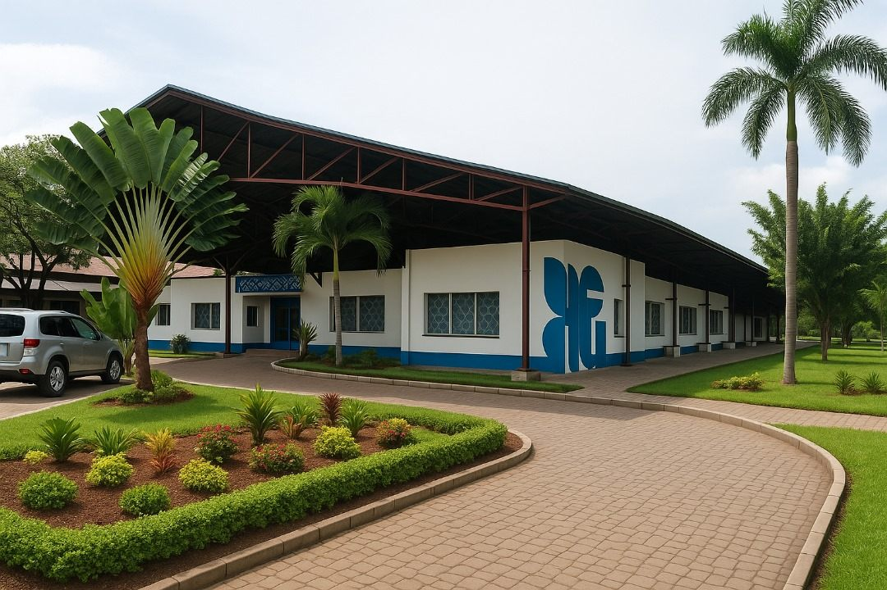
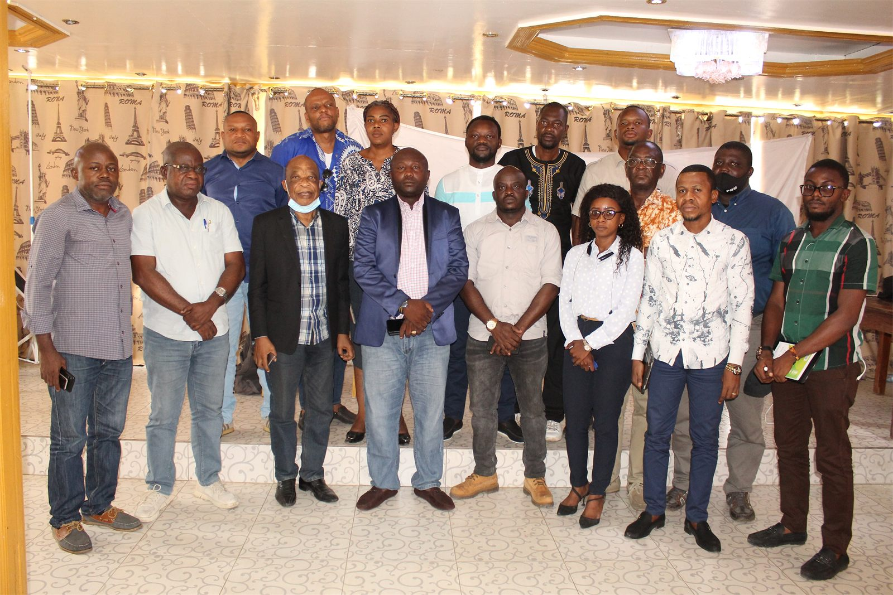

Études de cadrage général et particulier
Schémas directeurs et Plans Urbains de Référence qui définissent les grandes orientations territoriales.
En savoir plusStructure technique d'études pérenne du Ministère des Infrastructures et Travaux Publics, le BEAU accompagne l'État dans l'aménagement et la mise en place d'infrastructures durables, innovantes et réfléchies.


Le Bureau d'Études d'Aménagement et d'Urbanisme est une structure technique d'études pérenne du Ministère des Infrastructures et Travaux Publics, ayant compétence en matière d'aménagement et de mise en place des infrastructures. Son champ d'intervention est l'aménagement au sens large.
Le BEAU élabore les études qui garantissent l'optimisation des choix d'investissement au regard de l'importance des financements consentis dans le secteur des infrastructures.
Schémas directeurs et Plans Urbains de Référence qui définissent les grandes orientations territoriales.
En savoir plusÉtudes de préinvestissement : faisabilité, risques, coûts et délais pour sécuriser les investissements.
En savoir plusIntégration des enjeux sociaux, économiques et climatiques dans chaque projet d'infrastructure.
En savoir plusAvant-projet, avant-projet détaillé, conventions, cahiers des charges et documents d'appel d'offres.
En savoir plusConcepteur, conducteur d'opérations, maître d'œuvre ou maître d'ouvrage délégué selon les projets.
En savoir plusSuivi et évaluation des programmes d'aménagement et de développement urbain.
En savoir plusPlans Urbains de Référence, plans locaux d'aménagement, viabilisation de sites et programmes d'investissement prioritaires.
Les autorités et les forces vives locales contribuent au choix des priorités à promouvoir.
Des compétences adaptées au contexte de la RDC : routes, voirie, équipements et édifices publics.
Infrastructures vertes, corridors écologiques, drainage durable : la durabilité est une exigence.
Une coordination active entre l'État, les collectivités, les bailleurs et les entreprises.
« Les infrastructures doivent améliorer la vie des citoyens. En facilitant la mobilité, en renforçant l'accès aux services et en stimulant le développement économique, elles deviennent des leviers de transformation sociale et territoriale. »
BEAU — Première Conférence Nationale sur les Infrastructures et Travaux Publics en RDC, mars 2026
Gouvernement, entités territoriales décentralisées, bailleurs de fonds ou investisseurs privés : le BEAU met son expertise à votre service.